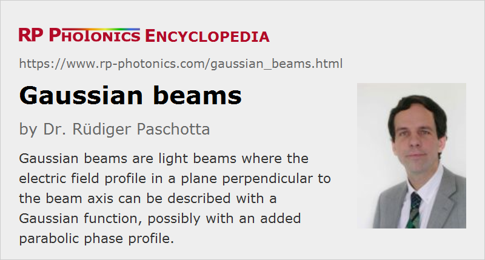

Gaussian Beams
Definition: light beams where the electric field profile in a plane perpendicular to the beam axis can be described with a Gaussian function, possibly with an added parabolic phase profile
More general term: light beams
German: Gauß-Strahlen
How to cite the article; suggest additional literature
Author: Dr. Rüdiger Paschotta
In optics and particularly in laser physics, laser beams often occur in the form of Gaussian beams, which are named after the mathematician and physicist Johann Carl Friedrich Gauß. Here, the transverse profile of the optical intensity of the beam with a power P can be described with a Gaussian function:
where the beam radius w(z) is the distance from the beam axis where the intensity drops to 1/e2 (≈ 13.5%) of the maximum value. A hard aperture with radius w can transmit ≈ 86.5% of the optical power. For an aperture radius of 1.5 w or 2 w, this fraction is increased to 98.9% and 99.97%, respectively. (A common error in the integration leads to substantially different results – see section “Questions and Comments from Users” below.)
Note that the factor 1 / 2 in the denominator in the equation is unfortunately often forgotten, so that the on-axis intensity of the beam is underestimated by a factor of 2. For example, quoted numbers for the measured damage threshold of optical components are often affected by that problem; the peak intensity at the damage threshold in terms of optical power may have be calculated with or without the mentioned factor, so that a substantial quantitative uncertainty remains for the reader.
The full width at half maximum (FWHM) of the intensity profile is ≈1.18 times the Gaussian beam radius w(z).
In addition to the Gaussian shape of the intensity profile, a Gaussian beam has a transverse phase profile which can be described with a polynomial of at most second order. A linear phase variation in one direction (not considered further here) describes a tilt, and a quadratic phase variation is associated with divergence or convergence of the beam. There are also multimode beams with Gaussian intensity profile, but complicated phase patterns, and these are not called Gaussian beams.
Propagation of Gaussian Beams
Gaussian beams are usually considered in situations where the beam divergence is relatively small, so that the so-called paraxial approximation can be applied. This approximation allows the omission of the term with the second-order derivative in the propagation equation (as derived from Maxwell's equations), so that a first-order differential equation results. Within this approximation, a Gaussian beam propagating in free space remains Gaussian, except that of course its parameters evolve. For a monochromatic beam, propagating in the z direction with the wavelength λ, the complex electric field amplitude (phasor) is
with the peak amplitude |E0| and beam radius w0 at the beam waist, the wavenumber k = 2π / λ, the Rayleigh length zR (see below) and the radius of curvature R(z) of the wavefronts. The oscillating real electric field is obtained by multiplying the phasor with exp(−i 2π c t / λ) and taking the real part.
Due to the basic phenomenon of diffraction, the beam radius cannot simply remain constant – it varies along the propagation direction. This can be described mathematically as
with the Rayleigh length
which determines the length over which the beam can propagate without diverging significantly. (The older literature often deals with the confocal length b, which is just twice the Rayleigh length.) A so-called collimated beam (with approximately constant beam radius) has to have a large Rayleigh length, compared with the envisaged propagation distance.
The position z = 0 in the equation above corresponds to the beam waist or focus where the beam radius is at its minimum, and the phase profile is flat. The radius of curvature R of the wavefronts evolves according to
For propagation in transparent media, λ is the wavelength in the medium (i.e., not the vacuum wavelength). Otherwise, the formalism explained above can be used without modification, assuming that the medium is homogeneous, isotropic and lossless.
The term with the arctan function in the expression for the electric field describes the Gouy phase shift, which is important e.g. for the resonance frequencies of optical resonators.
The beam divergence in the far field (i.e., for z values much larger than zR) is
which shows that the smaller the waist radius and the longer the wavelength, the stronger is the divergence of the beam far from the waist. The beam parameter product (product of waist radius and far-field divergence angle) of a Gaussian beam is λ/π, i.e., it depends only the wavelength. For laser beams with non-ideal beam quality (see below), that value is larger.
In terms of Gaussian beam parameters, the paraxial approximation requires that the beam radius at the focus is large compared with the wavelength. This implies that the beam divergence does not become too large, and that the Rayleigh length is substantially larger than the beam radius. For very tightly focused beams, the paraxial approximation is not well satisfied, and a more complex method is required for calculating the beam propagation.
The article on laser beams contains a paragraph titled “Limitations for the Focusing of Laser Beams”. The presented rules can be applied to Gaussian beams but also to generalize beams with some larger M2 factor.
Complex q Parameter
The state of a Gaussian beam at a certain z position can be specified with a complex q parameter
so that the complex electric field can be written as
Propagation over some length then simply increases the q parameter by that length. When a Gaussian beam passes an optical element such as a curved mirror or a lens, this can be described by transforming its parameters with an ABCD matrix according to
Astigmatic Beams
Gaussian beams can have different radii and divergence values for two perpendicular transverse directions, denoted e.g. x and y. Equations similar to those above can be used for describing the essentially independent evolution of beam radii in both directions. If the focus positions for both directions are not equal, the beam is called astigmatic.
Gaussian Beams and Resonator Modes
The modes of an optical resonator with the lowest order in the transverse direction (called TEM00 or fundamental transverse modes) are Gaussian modes, if the resonator is stable, all optical media in the resonator are homogeneous, and all surfaces between media are either flat or have a parabolic shape. Therefore, lasers emitting only on the fundamental transverse mode often emit beams with close to Gaussian shape. Deviations from the mentioned conditions, e.g. by thermal lensing in a gain medium, can cause non-Gaussian beam shapes and/or the simultaneous excitation of different transverse modes. Modes of higher transverse order can be described e.g. by Hermite–Gaussian or Laguerre–Gaussian functions. In any case, the deviation from a Gaussian beam shape can be quantified with the M2 factor. A Gaussian beam has the highest possible beam quality, which is related to the lowest possible beam parameter product, and corresponds to M2 = 1.
The fundamental propagation modes of fibers are generally not exactly Gaussian, but also not too far from that shape. Therefore, a Gaussian beam can usually be launched into a single-mode fiber with high efficiency (80% or larger), provided that suitable optics are used.
Importance of Gaussian Beams
The importance of Gaussian beams results from a number of special properties:
- Gaussian beams have a Gaussian intensity profile at any location along the beam axis; only the beam radius varies.
- A Gaussian beam remains Gaussian also after passing simple kinds of optical elements (e.g. lenses without optical aberrations).
- Gaussian beams are the lowest-order self-consistent field distribution in optical resonators (→ resonator modes) provided that there are no intracavity elements causing beam distortions. For that reason, the output beams of many lasers are Gaussian.
- Single-mode fibers have beam profiles which are usually close to Gaussian. Even in cases with a less than perfect fit, the Gaussian approximation is popular because of the relatively simple rules for calculating the beam propagation.
- There are so-called higher-order modes e.g. of Hermite–Gaussian type. These have more complicated field patterns and exhibit a larger beam parameter product.
- For beams with poor beam quality, the Gaussian mode analysis can be generalized, using the so-called M2 factor.
Questions and Comments from Users
2020-05-28
Its is possible to flatten a Gaussian beam profile by defocusing the beam?
Answer from the author:
No, it isn't – away from its focus, the beam will still have a Gaussian beam profile, just with larger diameter.
2020-05-31
What happens when a Gaussian beam goes into another medium, passing by a planar interface? Is it just a matter of correcting parameters like beam divergence, Rayleigh range and Gouy phase by considering the new refractive index and correct the beam direction using Snell's law?
Answer from the author:
Yes, you are right: the beam will again be a Gaussian beam in the medium, just with modified parameters.
Here you can submit questions and comments. As far as they get accepted by the author, they will appear above this paragraph together with the author’s answer. The author will decide on acceptance based on certain criteria. Essentially, the issue must be of sufficiently broad interest.
Please do not enter personal data here; we would otherwise delete it soon. (See also our privacy declaration.) If you wish to receive personal feedback or consultancy from the author, please contact him e.g. via e-mail.
By submitting the information, you give your consent to the potential publication of your inputs on our website according to our rules. (If you later retract your consent, we will delete those inputs.) As your inputs are first reviewed by the author, they may be published with some delay.
Bibliography
| [1] | H. Kogelnik and T. Li, “Laser beams and resonators”, Appl. Opt. 5 (10), 1550 (1966), doi:10.1364/AO.5.001550 |
| [2] | P. A. Bélanger, “Beam propagation and the ABCD ray matrices”, Opt. Lett. 16 (4), 196 (1991), doi:10.1364/OL.16.000196 |
| [3] | A. E. Siegman, Lasers, University Science Books, Mill Valley, CA (1986) |
| [4] | J. Alda, “Laser and Gaussian beam propagation and transformation”, https://www.researchgate.net/publication/255041663_Laser_and_Gaussian_Beam_Propagation_and_Transformation |
See also: laser beams, Gouy phase shift, modes, multimode beams, Hermite–Gaussian modes, beam quality, diffraction-limited beams, beam parameter product, beam radius, beam waist, collimated beams, ABCD matrix
and other articles in the category general optics

This encyclopedia is authored by Dr. Rüdiger Paschotta, the founder and executive of RP Photonics Consulting GmbH. How about a tailored training course from this distinguished expert at your location? Contact RP Photonics to find out how his technical consulting services (e.g. product designs, problem solving, independent evaluations, training) and software could become very valuable for your business!
|  |
If you like this page, please share the link with your friends and colleagues, e.g. via social media: 


These sharing buttons are implemented in a privacy-friendly way! |
2020-04-07
I would expect the power transmission of a Gaussian beam through a 1-w radius aperture to be the integral of your expression for the intensity, which I'm calculating as 95.4%, not 86.5%.
Answer from the author:
It seems that you got the integration wrong: you apparently simply integrated the Gaussian function in the radial direction from 0 to w. However, you need to integrate over the area; therefore, the integrand must be exp(−2 (r / w)2) 2π r dr (apart from the normalization factor). With that, you get the mentioned 86.5%.